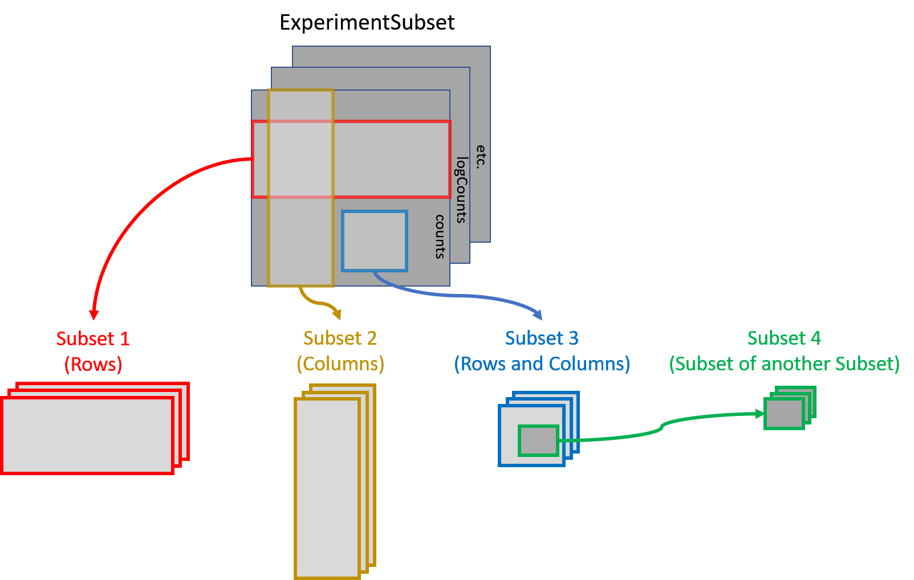

ExperimentSubset: Manages Subsets of Data with Bioconductor Experiment Objects
Irzam Sarfraz
Department of Computer Science, National Textile University, Faisalabad, PakistanMuhammad Asif
Department of Computer Science, National Textile University, Faisalabad, PakistanJoshua D. Campbell
Section of Computational Biomedicine, BUSM, Boston University, Boston, MA, United StatesSource:
vignettes/ExperimentSubset.Rmd
ExperimentSubset.RmdThis vignette is a short introduction. The ExperimentSubset website has the full reference and longer articles, including an end-to-end single-cell workflow that keeps every subset of a PBMC data set, from empty droplets to T-cell subtypes, in one object.
Installation
if (!requireNamespace("BiocManager", quietly=TRUE)){
install.packages("BiocManager")}
BiocManager::install("ExperimentSubset")To install the latest version from GitHub, use the following code:
BiocManager::install("campbio/ExperimentSubset")Loading the package:
Motivation
Experiment objects such as the SummarizedExperiment or
SingleCellExperiment are data containers for one or more
matrix-like assays along with the associated row and column data. Often
only a subset of the original data is needed for down-stream analysis.
For example, filtering out poor quality samples will require excluding
some columns before analysis. The ExperimentSubset object
is a container to efficiently manage different subsets of the same data
without having to make separate objects for each new subset and can be
used as a drop-in replacement for other experiment classes.
A Brief Description
ExperimentSubset package enables users to perform
flexible subsetting of Single-Cell data that comes from the same
experiment as well as the consequent storage of these subsets back into
the same object. In general, it offers the same interface to the users
as the SingleCellExperiment container which is one the most
widely used containers for Single-Cell data. However, in addition to the
features offered by SingleCellExperiment container,
ExperimentSubset offers subsetting features while hiding
the implementation details from the users. It does so by creating
references to the subset rows and columns
instead of storing a new assay whenever possible instead of actually
copying the redundant data. Functions from
SingleCellExperiment such as assay,
rowData and colData can be used for regular
assays as one would normally do, as well as with newly created subsets
of the data. Most code written for the input object also works on the
ExperimentSubset object, and subsets are reached through an
extra subsetName argument and the subset methods described
below. Subsetting an object that contains subsets with [ is
not supported yet.
Overview of the ExperimentSubset class
The ExperimentSubset package is composed of multiple
classes that support subsets management capability depending upon the
class of the input experiment object. The currently supported experiment
classes which can be used with ExperimentSubset are
SummarizedExperiment,
RangedSummarizedExperiment,
SingleCellExperiment, TreeSummarizedExperiment
and SpatialExperiment.
The ExperimentSubset package adds an additional slot
subsets to the objects from these classes which enables
support for the creation and management of subsets of data.

Each subset inside the ExperimentSubset object (more
specifically inside the subsets slot of the object) is
stored as an AssaySubset instance. This
AssaySubset instance creates reference to the row and
column indices for this particular subset against a parent (which can be
the inherited parent object or another subset). In case a new assay is
to be stored against a subset, it is stored as a separate experiment
object (same class as the inherited object) inside the subset.
Core methods of ExperimentSubset class
Many methods of the SummarizedExperiment and
SingleCellExperiment classes accept an additional
subsetName argument to work on a subset, as described in
the section on overridden methods below. In addition, some core methods
for the creation and manipulation of subsets are provided with the
ExperimentSubset class.
ExperimentSubset constructor
The constructor method allows the creation of an
ExperimentSubset object from an input experiment object of
one of the five supported classes listed above. Additionally, if needed,
a subset can be directly created from within the constructor by
providing input a named list to the subset parameter.
#set a seed so the random counts below are reproducible
set.seed(1)
counts <- matrix(rpois(100, lambda = 10), ncol=10, nrow=10)
sce <- SingleCellExperiment(list(counts = counts))
es <- ExperimentSubset(sce)
es## class: SubsetSingleCellExperiment
## dim: 10 10
## metadata(0):
## assays(1): counts
## rownames: NULL
## rowData names(0):
## colnames: NULL
## colData names(0):
## reducedDimNames(0):
## mainExpName: NULL
## altExpNames(0):
## subsets(0):
## subsetAssays(0):Additionally, an ExperimentSubset object can also be
created directly from generally loaded data such as counts matrices,
which can be passed to the constructor function in a list.
counts <- matrix(rpois(100, lambda = 10), ncol=10, nrow=10)
ExperimentSubset(list(counts = counts))## class: SubsetSingleCellExperiment
## dim: 10 10
## metadata(0):
## assays(1): counts
## rownames: NULL
## rowData names(0):
## colnames: NULL
## colData names(0):
## reducedDimNames(0):
## mainExpName: NULL
## altExpNames(0):
## subsets(0):
## subsetAssays(0):
createSubset
The createSubset method as evident from the name,
creates a subset from an already available assay in the
object. The subsetName (a character string),
rows (a numeric or character
vector), cols (a numeric or
character vector) and parentAssay
(a character string) are the standard parameters of the
createSubset method. If rows or
cols are missing or NULL, all of
the rows or columns are selected from the specified
parentAssay. If parentAssay is
missing or NULL, the first available assay
from the parent object is linked as the parent of this subset. The
parentAssay can be an assay in the parent
object, a subset, or an assay seen in a subset, written as
"subset/assay".
es <- createSubset(es,
subsetName = "subset1",
rows = c(1:2),
cols = c(1:5),
parentAssay = "counts")
es## class: SubsetSingleCellExperiment
## dim: 10 10
## metadata(0):
## assays(1): counts
## rownames: NULL
## rowData names(0):
## colnames: NULL
## colData names(0):
## reducedDimNames(0):
## mainExpName: NULL
## altExpNames(0):
## subsets(1): subset1
## subsetAssays(1): subset1
setSubsetAssay and getSubsetAssay
The setSubsetAssay method should be used when a subset
assay needs to be stored in a previously created subset.
This is specifically different from the createSubset method
which only creates a subset by referencing to a defined
parentAssay where the internalAssay of the
subset has no assays stored. The setSubsetAssay method
however, is used to store an assay in this
internalAssay slot of the subset which in fact is a subset
experiment object of the same class as the parent object.
subset1Assay <- assay(es, "subset1")
subset1Assay[,] <- subset1Assay[,] + 1
es <- setSubsetAssay(es,
subsetName = "subset1",
inputMatrix = subset1Assay,
subsetAssayName = "subset1Assay")
es## class: SubsetSingleCellExperiment
## dim: 10 10
## metadata(0):
## assays(1): counts
## rownames: NULL
## rowData names(0):
## colnames: NULL
## colData names(0):
## reducedDimNames(0):
## mainExpName: NULL
## altExpNames(0):
## subsets(1): subset1
## subsetAssays(2): subset1 subset1/subset1AssayThe parameters of interest against this method are
subsetName which specifies the name of the subset inside
which the an input assay should be stored, inputMatrix
which is a matrix-type object to be stored as an assay inside a subset
specified by the subsetName parameter and lastly the
subsetAssayName parameter which represents the name of the
new assay.
To get a subset assay, getSubsetAssay method can be
used:
#get assay from 'subset1'
getSubsetAssay(es, subsetName = "subset1")## [,1] [,2] [,3] [,4] [,5]
## [1,] 8 8 3 5 5
## [2,] 10 2 11 13 12
#get 'subset1Assay', stored inside 'subset1'
getSubsetAssay(es, subsetName = "subset1", subsetAssayName = "subset1Assay")## [,1] [,2] [,3] [,4] [,5]
## [1,] 9 9 4 6 6
## [2,] 11 3 12 14 13
#the same assay, named as "subset/assay"
getSubsetAssay(es, subsetName = "subset1/subset1Assay")## [,1] [,2] [,3] [,4] [,5]
## [1,] 9 9 4 6 6
## [2,] 11 3 12 14 13A subset also sees the assays of its parent, sliced to its rows and
columns, under the same names: these are linked assays, and
they are not copied. Each subset has its own names, so two subsets made
from the same parent can store an assay with the same name. Storing an
assay with a name the subset already sees through its parent needs
unlink = TRUE, which makes the subset (and subsets made
from it) use its own version from then on.
#'subset1' sees its own assay and the main 'counts' it was made from
subsetAssayNames(es, subsetName = "subset1")## [1] "counts" "subset1Assay"Apart from setSubsetAssay and
getSubsetAssay methods, assay and
assay<- methods can also be used for the same purpose.
Their usage has been described in the overridden methods section
below.
getSubsetExperiment and
setSubsetExperiment
getSubsetExperiment returns a subset as a standalone
object of the main object’s class, here a
SingleCellExperiment, with the assays the subset sees (its
own and the linked ones), its colData, rowData, reducedDims and
metadata. Any tool written for that class can then be run on it.
setSubsetExperiment stores the result back in the subset:
what the object holds replaces the subset’s own data, while linked
assays that are unchanged are not copied.
#take 'subset1' out as a SingleCellExperiment
subset1 <- getSubsetExperiment(es, subsetName = "subset1")
subset1## class: SingleCellExperiment
## dim: 2 5
## metadata(0):
## assays(2): counts subset1Assay
## rownames: NULL
## rowData names(0):
## colnames: NULL
## colData names(0):
## reducedDimNames(0):
## mainExpName: NULL
## altExpNames(0):
#add a colData column and a reducedDim, as a tool might
subset1$group <- c("a", "a", "b", "b", "b")
reducedDim(subset1, "example") <- matrix(1:10, nrow = 5)
#store them back in 'subset1'
es <- setSubsetExperiment(es, subsetName = "subset1", value = subset1)
colData(es, subsetName = "subset1")## DataFrame with 5 rows and 1 column
## group
## <character>
## 1 a
## 2 a
## 3 b
## 4 b
## 5 b
reducedDimNames(es, subsetName = "subset1")## [1] "example"
subsetSummary
The subsetSummary method displays an overall summary of
the ExperimentSubset object including the assays in the
parent object, the list of subsets along with the stored assays, reduced
dimensions, alt experiments and other supplementary information that may
help the users understand the current condition of the object. The most
important piece of information displayed by this method is the
hierarchical ‘parent-subset’ link against each subset in the object.
subsetSummary(es)## Main assay(s):
## counts
##
## Subset(s):
## Name Dim Parent Assays ReducedDims
## 1 subset1 2, 5 counts subset1Assay exampleAdditional helper methods
Helper methods have been provided for use by the users during specific circumstances while manipulating subsets of data. These helper methods and their short descriptions are given below:
-
subsetNamesReturns the names of all available subsets (excluding internal subset assays) -
subsetAssayNamesReturns the names of all available subsets (including internal subset assays) -
subsetCountReturns the total count of the subsets (excluding internal subset assays) -
subsetAssayCountReturns the total count of the subsets (including internal subset assays) -
subsetDimReturns the dimensions of a specified subset -
subsetColDataGets or sets colData from/to a subset -
subsetRowDataGets or sets rowData from/to a subset -
subsetColnamesGets or sets colnames from/to a subset -
subsetRownamesGets or sets rownames from/to a subset -
subsetParentReturns the ‘subset-parent’ link of a specified subset -
setSubsetAssaySets an assay to a subset -
getSubsetAssayGets an assay from a subset -
getSubsetExperimentReturns a subset as a standalone experiment object -
setSubsetExperimentStores a standalone experiment object in a subset
subsetColData & subsetRowData
Both subsetColData and subsetRowData getter
methods take in an additional logical parameter
parentColData or parentRowData that specifies
if the returned ‘colData’ or ‘rowData’ should include the ‘colData’ and
‘rowData’ from the parent object as well. By default,
parentColData and parentRowData parameters are
set to FALSE. Same applies to the usage of inherited
rowData and colData methods.
#number of columns in 'subset1'
subset1Columns <- subsetDim(es, subsetName = "subset1")[2]
#store a colData column in the parent object
colData(es)$sampleID <- seq_len(ncol(es))
#store a colData column in 'subset1' using option 1
colData(es, subsetName = "subset1")$subsetSampleID1 <- seq_len(subset1Columns)
#store a colData column in 'subset1' using option 2
subsetColData(es, subsetName = "subset1")$subsetSampleID2 <-
seq_len(subset1Columns)
#get colData from 'subset1' without parent colData
subsetColData(es, subsetName = "subset1", parentColData = FALSE)## DataFrame with 5 rows and 3 columns
## group subsetSampleID1 subsetSampleID2
## <character> <integer> <integer>
## 1 a 1 1
## 2 a 2 2
## 3 b 3 3
## 4 b 4 4
## 5 b 5 5
#get colData from 'subset1' with parent colData
subsetColData(es, subsetName = "subset1", parentColData = TRUE)## DataFrame with 5 rows and 4 columns
## sampleID group subsetSampleID1 subsetSampleID2
## <integer> <character> <integer> <integer>
## 1 1 a 1 1
## 2 2 a 2 2
## 3 3 b 3 3
## 4 4 b 4 4
## 5 5 b 5 5
#the same works with the `colData` method (and with `rowData` and the
#`parentRowData` parameter for row data)
colData(es, subsetName = "subset1", parentColData = FALSE) #without parent data## DataFrame with 5 rows and 3 columns
## group subsetSampleID1 subsetSampleID2
## <character> <integer> <integer>
## 1 a 1 1
## 2 a 2 2
## 3 b 3 3
## 4 b 4 4
## 5 b 5 5
colData(es, subsetName = "subset1", parentColData = TRUE) #with parent data## DataFrame with 5 rows and 4 columns
## sampleID group subsetSampleID1 subsetSampleID2
## <integer> <character> <integer> <integer>
## 1 1 a 1 1
## 2 2 a 2 2
## 3 3 b 3 3
## 4 4 b 4 4
## 5 5 b 5 5Overridden methods for ExperimentSubset class
These are the methods that have been overridden from other classes to
support the subset feature of the ExperimentSubset objects
by introducing an additional parameter subsetName to these
methods. These methods can simply be called on any
ExperimentSubset object to get or set from the parent
object or from any subset by passing the optional
subsetName parameter.
The methods include rowData, rowData<-,
colData, colData<-, metadata,
metadata<-, reducedDim,
reducedDim<-, reducedDims,
reducedDims<-, reducedDimNames,
reducedDimNames<-, altExp,
altExp<-, altExps,
altExps<-, altExpNames and
altExpNames<-, and for SpatialExperiment
objects spatialCoords and spatialData. All of
these methods can be used with the subsets by providing the optional
subsetName parameter.
assay-get & assay-set inherited methods
An exception to the above approach is the use of assay
and assay<- methods, both of which have a slightly
different usage as described below:
Because the assay<- setter method in the case of a
subset needs to store the assay inside the subset, we need to specify
the subset name inside which the assay should be stored as
i parameter and define the new name of the subset assay as
the additional subsetAssayName parameter.
#creating a dummy ES object
counts <- matrix(rpois(100, lambda = 10), ncol=10, nrow=10)
sce <- SingleCellExperiment(list(counts = counts))
es <- ExperimentSubset(sce)
#create a subset
es <- createSubset(es, subsetName = "subset1", rows = c(1:2), cols = c(1:4))
#store an assay inside the newly created 'subset1'
#note that 'assay<-' setter has two important parameters 'x' and 'i' where
#'x' is the object and 'i' is the assay name, but in the case of storing to a
#subset we use 'x' as the object, 'i' as the subset name inside which the assay
#should be stored and an additional 'subsetAssayName' parameter which defines
#the name of the new assay
assay(
x = es,
i = "subset1",
subsetAssayName = "subset1InternalAssay") <- matrix(rpois(8, lambda = 10),
ncol=4, nrow=2)Using assay getter method is simple, as no additional
parameter is required unlike in the setter method.
#assay getter has parameters 'x' which is the input object and 'i' which can
#be an assay name in the parent object or a subset name; an assay inside a
#subset is chosen with 'subsetAssayName' or named as "subset/assay"
#getting 'counts' from parent es object
assay(
x = es,
i = "counts"
)## [,1] [,2] [,3] [,4] [,5] [,6] [,7] [,8] [,9] [,10]
## [1,] 11 8 2 6 4 8 6 7 14 12
## [2,] 15 9 7 8 11 11 16 14 13 10
## [3,] 9 9 8 10 8 10 9 8 9 8
## [4,] 7 13 13 15 14 5 6 12 5 8
## [5,] 9 10 8 8 7 11 10 8 12 12
## [6,] 12 11 9 6 15 7 11 5 8 6
## [7,] 13 9 12 10 9 13 6 14 5 10
## [8,] 10 9 15 13 5 9 5 14 10 9
## [9,] 7 12 10 2 11 9 10 12 7 14
## [10,] 6 13 8 9 13 12 8 4 12 10
#getting just the 'subset1' from es object
assay(
x = es,
i = "subset1"
)## [,1] [,2] [,3] [,4]
## [1,] 11 8 2 6
## [2,] 15 9 7 8
#getting the 'subset1InternalAssay' from inside the 'subset1'
assay(
x = es,
i = "subset1",
subsetAssayName = "subset1InternalAssay"
)## [,1] [,2] [,3] [,4]
## [1,] 10 6 12 9
## [2,] 10 14 11 14Using the ExperimentSubset object: A toy example
Creating the ExperimentSubset object is as simple as
passing an experiment object to the ExperimentSubset
constructor:
counts <- matrix(rpois(100, lambda = 10), ncol=10, nrow=10)
sce <- SingleCellExperiment(list(counts = counts))
es <- ExperimentSubset(sce)
subsetSummary(es)## Main assay(s):
## counts
##
## Subset(s):
## NULLCreate a subset that includes the first 5 rows and columns only:
es <- createSubset(es,
subsetName = "subset1",
rows = c(1:5),
cols = c(1:5),
parentAssay = "counts")
subsetSummary(es)## Main assay(s):
## counts
##
## Subset(s):
## Name Dim Parent
## 1 subset1 5, 5 countsCreate another subset from subset1 by only keeping the
first two rows:
es <- createSubset(es,
subsetName = "subset2",
rows = c(1:2),
cols = c(1:5),
parentAssay = "subset1")
subsetSummary(es)## Main assay(s):
## counts
##
## Subset(s):
## Name Dim Parent
## 1 subset1 5, 5 counts
## 2 subset2 2, 5 subset1 -> countsGet assay from subset2 and update
values:
subset2Assay <- assay(es, "subset2")
subset2Assay[,] <- subset2Assay[,] + 1Store the updated assay back to subset2
using one of the two approaches:
#approach 1
es <- setSubsetAssay(es,
subsetName = "subset2",
inputMatrix = subset2Assay,
subsetAssayName = "subset2Assay_a1")
#approach 2
assay(es, "subset2", subsetAssayName = "subset2Assay_a2") <- subset2Assay
subsetSummary(es)## Main assay(s):
## counts
##
## Subset(s):
## Name Dim Parent Assays
## 1 subset1 5, 5 counts
## 2 subset2 2, 5 subset1 -> counts subset2Assay_a1, subset2Assay_a2Store an experiment object in the altExp slot of
subset2:
altExp(x = es,
e = "subset2_alt1",
subsetName = "subset2") <- SingleCellExperiment(assays = list(
counts = assay(es, "subset2")
))Show the current condition of ExperimentSubset
object:
subsetSummary(es)## Main assay(s):
## counts
##
## Subset(s):
## Name Dim Parent Assays
## 1 subset1 5, 5 counts
## 2 subset2 2, 5 subset1 -> counts subset2Assay_a1, subset2Assay_a2
## AltExperiments
## 1
## 2 subset2_alt1Using the ExperimentSubset object: an example with real
scRNA-seq data
This short example on the PBMC 4k data set isn’t run when the vignette is built. For a complete, runnable workflow on the same data, from raw droplets through quality control, decontamination, clustering and annotation to a re-analysis of the T cells, see the single-cell workflow article.
Installing and loading required packages:
if (!requireNamespace("BiocManager", quietly = TRUE))
install.packages("BiocManager")
BiocManager::install(c("TENxPBMCData", "scrapper"))
library(ExperimentSubset)
library(TENxPBMCData)
library(scrapper)Load PBMC4K dataset and create ExperimentSubset
object:
tenx_pbmc4k <- TENxPBMCData(dataset = "pbmc4k")
es <- ExperimentSubset(tenx_pbmc4k)
subsetSummary(es)Compute per-cell QC metrics on the counts matrix using
the scrapper library and store the total count
(sum) for each cell:
qcMetrics <- computeRnaQcMetrics(assay(es, "counts"), subsets = list())
colData(es)$sum <- qcMetrics$sumFilter cells with low column sum and create a new subset called ‘filteredCells’:
filteredCellsIndices <- which(colData(es)$sum > 1500)
es <- createSubset(es, subsetName = "filteredCells",
cols = filteredCellsIndices, parentAssay = "counts")
subsetSummary(es)Normalize ‘filteredCells’ subset using scrapper library
and store it back. Size factors are computed from each cell’s total
count and centered at one:
filteredCounts <- assay(es, "filteredCells")
filteredSizeFactors <- centerSizeFactors(colSums(filteredCounts))
normalizedCounts <- normalizeCounts(filteredCounts,
size.factors = filteredSizeFactors)
assay(es, "filteredCells",
subsetAssayName = "filteredCellsNormalized") <- normalizedCounts
subsetSummary(es)Find highly variable genes from the normalized assay in the previous
step using scrapper library against the ‘filteredCells’
subset only:
normalizedCounts <- assay(es, "filteredCells/filteredCellsNormalized")
geneVariances <- modelGeneVariances(normalizedCounts)
residualVariances <- geneVariances$statistics$residuals
topHVG2000 <- chooseHighlyVariableGenes(residualVariances, top = 2000)
es <- createSubset(es, subsetName = "hvg2000", rows = topHVG2000,
parentAssay = "filteredCells/filteredCellsNormalized")
subsetSummary(es)Run ‘PCA’ on the highly variable genes computed in the last step
using scrapper library against the ‘hvg2000’ subset only.
runPca returns the PCs in rows, so transpose them to put
cells in rows:
pcaResult <- runPca(assay(es, "hvg2000"))
pcaScores <- t(pcaResult$components)
reducedDim(es, type = "PCA", subsetName = "hvg2000") <- pcaScoresShow the current condition of the ExperimentSubset
object:
subsetSummary(es)Supported Input Object Classes
- SummarizedExperiment
- RangedSummarizedExperiment
- SingleCellExperiment
- TreeSummarizedExperiment
- SpatialExperiment
Methods for ExperimentSubset
-
ExperimentSubsetconstructor createSubsetsetSubsetAssaygetSubsetAssaygetSubsetExperimentsetSubsetExperimentsubsetSummarysubsetParentsubsetCountsubsetAssayCountsubsetNamessubsetAssayNamessubsetDimsubsetRowDatasubsetColDatasubsetColnamessubsetRownamessubsetRowData<-subsetColData<-subsetColnames<-subsetRownames<-showassayassay<-rowDatarowData<-colDatacolData<-metadatametadata<-reducedDimreducedDim<-reducedDimsreducedDims<-reducedDimNamesreducedDimNames<-altExpaltExp<-altExpsaltExps<-altExpNamesaltExpNames<-subsetSpatialCoordssubsetSpatialDatasubsetSpatialData<-subsetRowLinkssubsetColLinksspatialCoordsspatialDataspatialData<-rowLinkscolLinks
Implementation Details
The internal structure of an ExperimentSubset class is
described below:
Inherited parent object
The ExperimentSubset object during creation is assigned
one of the classes SubsetSummarizedExperiment,
SubsetRangedSummarizedExperiment,
SubsetSingleCellExperiment,
SubsetTreeSummarizedExperiment or
SubsetSpatialExperiment, each of which inherits from the
class of the input object. This ensures that
ExperimentSubset object can be manipulated in a fashion
similar to the input object class and so can be used as a drop-in
replacement for these classes. Most methods that work on the input
object class work on the ExperimentSubset objects as well;
subsetting with [ is an exception for objects that contain
subsets.
Additional subsets slot
The subsets slot of the ExperimentSubset
object is a SimpleList, where each element in this list is
an object of an internal AssaySubset class. The slot itself
is not directly accessible to the users and should be accessed through
the provided methods of the ExperimentSubset package. Each
element represents one subset linked to the experiment object in the
parent object. The structure of each subset is described below:
rowIndices
A numeric vector that stores the indices of
the selected rows in the linked parent assay within for this subset.
colIndices
A numeric vector that stores the indices of
the selected columns in the linked parent assay for this subset.
parentAssay
A character string that stores the name of the immediate
parent to which the subset is linked. The parentAssay can
be an assay in the parent ExperimentSubset
object, any subset, or an assay seen in a subset written as
"subset/assay".
internalAssay
The internalAssay slot stores an experiment object of
same type as the input object but with the dimensions of the subset. The
internalAssay is initially an empty experiment object with
only dimensions set to enable manipulation, but can be used to store
additional data against a subset such as assay,
rowData, colData, reducedDims,
altExps and metadata.
Learn more
- The ExperimentSubset website documents every function, for the release and for the devel version.
- The single-cell workflow article goes from raw droplets through quality control, decontamination, clustering and annotation to a re-analysis of T cells, keeping all subsets in one object.
Session Information
## R version 4.6.1 (2026-06-24)
## Platform: x86_64-pc-linux-gnu
## Running under: Ubuntu 24.04.5 LTS
##
## Matrix products: default
## BLAS: /usr/lib/x86_64-linux-gnu/openblas-pthread/libblas.so.3
## LAPACK: /usr/lib/x86_64-linux-gnu/openblas-pthread/libopenblasp-r0.3.26.so; LAPACK version 3.12.0
##
## locale:
## [1] LC_CTYPE=en_US.UTF-8 LC_NUMERIC=C
## [3] LC_TIME=en_US.UTF-8 LC_COLLATE=en_US.UTF-8
## [5] LC_MONETARY=en_US.UTF-8 LC_MESSAGES=en_US.UTF-8
## [7] LC_PAPER=en_US.UTF-8 LC_NAME=C
## [9] LC_ADDRESS=C LC_TELEPHONE=C
## [11] LC_MEASUREMENT=en_US.UTF-8 LC_IDENTIFICATION=C
##
## time zone: Etc/UTC
## tzcode source: system (glibc)
##
## attached base packages:
## [1] stats4 stats graphics grDevices utils datasets methods
## [8] base
##
## other attached packages:
## [1] ExperimentSubset_1.23.22 TreeSummarizedExperiment_2.21.0
## [3] Biostrings_2.81.9 XVector_0.53.0
## [5] SpatialExperiment_1.23.0 SingleCellExperiment_1.35.2
## [7] SummarizedExperiment_1.43.0 Biobase_2.73.2
## [9] GenomicRanges_1.65.4 Seqinfo_1.3.2
## [11] IRanges_2.47.5 S4Vectors_0.51.10
## [13] BiocGenerics_0.59.12 generics_0.1.4
## [15] MatrixGenerics_1.25.0 matrixStats_1.5.0
## [17] BiocStyle_2.41.0
##
## loaded via a namespace (and not attached):
## [1] rjson_0.2.23 xfun_0.62 bslib_0.12.0
## [4] htmlwidgets_1.6.4 lattice_0.23-1 yulab.utils_0.2.5
## [7] vctrs_0.7.3 tools_4.6.1 parallel_4.6.1
## [10] tibble_3.3.1 pkgconfig_2.0.3 Matrix_1.7-6
## [13] desc_1.4.3 lifecycle_1.0.5 compiler_4.6.1
## [16] treeio_1.37.1 textshaping_1.0.5 codetools_0.2-20
## [19] htmltools_0.5.9 sass_0.4.10 lazyeval_0.2.3
## [22] yaml_2.3.12 tidyr_1.3.2 pkgdown_2.2.1
## [25] pillar_1.11.1 crayon_1.5.3 jquerylib_0.1.4
## [28] BiocParallel_1.47.0 DelayedArray_0.39.8 cachem_1.1.0
## [31] magick_2.9.1 abind_1.4-8 nlme_3.1-171
## [34] tidyselect_1.2.1 digest_0.6.39 purrr_1.2.2
## [37] dplyr_1.2.1 bookdown_0.48 fastmap_1.2.0
## [40] grid_4.6.1 cli_3.6.6 SparseArray_1.13.4
## [43] magrittr_2.0.5 S4Arrays_1.13.2 ape_5.8-1
## [46] rappdirs_0.3.4 rmarkdown_2.32 otel_0.2.0
## [49] ragg_1.5.2 evaluate_1.0.5 knitr_1.52
## [52] rlang_1.3.0 Rcpp_1.1.2 tidytree_0.4.8
## [55] glue_1.8.1 BiocManager_1.30.27 jsonlite_2.0.0
## [58] R6_2.6.1 systemfonts_1.3.2 fs_2.1.0